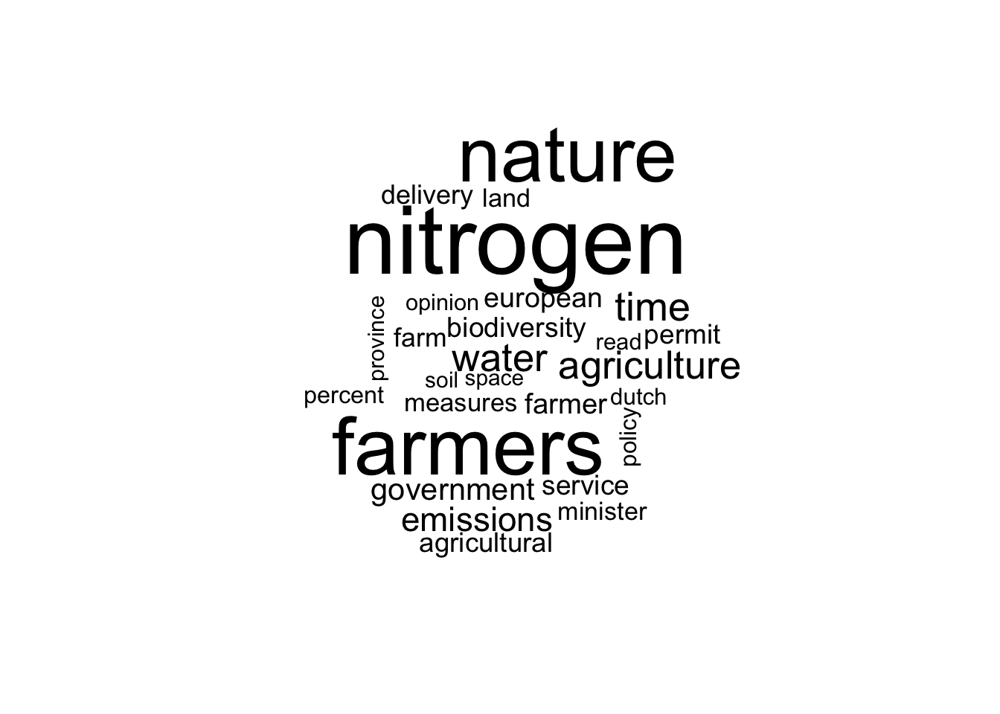

![]()
# renv::activate()
# if (!"renv" %in% installed.packages()) install.packages("renv")
# renv::restore(prompt = FALSE)
# virtualenv_create(envname = "myenv", python = install_python())
# py_install("PyMuPDF == 1.21.0", envname = "myenv")What do the Dutch news say about farming communities?
A Topic Modeling Approach using R
Note
In this workshop, we will work in a computational notebook, an environment that combines narrative, executable code and output in one place. The document you are reading is a Quarto document that combines Markdown, a markup language with a simple syntax for text formatting, with code chunks written in the R programming language. If you are reading the source document script.qmd and want to see a rendered version of it, click on the Render button above this window or visit https://cforgaci.github.io/mint2324Q3U/script.html.
Setup
Software
During the workshop, we work in RStudio Server, a version of RStudio that is accessible through your web browser, so no installation is required. Visit RStudio Server and log in with the credentials provided during the workshop. To follow the steps described in this document after the workshop, you will need to install R, RStudio Desktop and Python for your operating system.
After opening RStudio, create a new project from
File > New Project... > Version Control > Gitwith the URLhttps://github.com/cforgaci/mint2324Q3U.gitand project directory namemint2324Q3U. Browse to a location of your choice on your computer and click onCreate Project. This will create a project directory populated with the data and scripts used in the workshop.Open the file
script.qmdfrom the Files tab in Rstudio. This will open the computational notebook from where this document was rendered. Activate the visual editor as shown below and continue reading there.

- For our analysis, we will need to load a number of R packages that extend the out-of-the-box functionality of R, as follows:
- First, run the
installcode chunk below by pressing on the green arrow in its upper right corner. If you are running this script in RStudio Desktop, you will need to first delete the five#signs before running theinstallcode chunk. It will take a few of minutes until all packages are installed. In RStudio Server, run the code as it is.
- In RStudio Server, run the code below in the console without the
#sign.
# Run the
# renv::deactivate()- Then run this code to load the packages.
library(tidyverse) # Data manipulation and visualisation
library(reticulate) # R interface with Python
library(tidytext) # Text manipulation
library(topicmodels) # Topic modeling
library(LDAvis) # Interactive visualisation of LDA models
require(servr) # LDAvis dependency
library(wordcloud) # Generate word clouds
require(reshape2) # wordcloud dependency
source("R/analyse.R") # Load custom functionsIntroduction
In this workshop, we will use topic modeling to reveal key topics in the Dutch news about farmer communities.
Motivation
As any quantitative method, topic modeling depends on data. The more, the better. And, of course, the better fit to the research question, the better. As opposed to qualitative methods, quantitative analyses conducted in a computational environment have three main benefits:
Reproducibility - you can re-run the analysis with the same results, and thus make your work verifiable;
Automation - you can run the analysis on other data, allowing yourself to easily re-run your analysis when you collect more data;
Scalability - run the analysis on (much) more data, overcoming the limitation of manual analysis.
We will demonstrate these three benefits first by analysing a given dataset, then re-running the analysis with tweaked parameters and then running the same analysis with other data.
The dataset
We will start with a dataset of 51 PDF documents containing news items, mostly from the period 2022-2024 and from the Dutch NRC newsletter. Let’s run the following code with the default value.
# What data will you work with? Use one of the following two values:
# - "nrc" if you want to use the default dataset
# - "mydata" if you want to use your own dataset
data_choice <- "nrc"
data_root <- paste0("data/", data_choice)Topic modeling: what is it and why do we use it?
We will use a selection of newsletter articles about farming communities in the Netherlands and we want to understand what are the main areas of concern in those news items. Topic modeling is an unsupervised machine learning method used to reveal hidden topics in text data, especially useful when large amounts of data are available, e.g., from social media or newsletter archives.
We will work with one of the most popular topic models called latent Dirichlet allocation (LDA), a probabilistic model in which every document is a distribution over a given number of topics and every topic is a distribution over the vocabulary, i.e., all distinct words used in all documents. The details of LDA are outside the scope of this workshop; if you want to know more, you can read more in (Blei 2012).
Prepare your data
Before fitting a topic model, we need to make sure that our data is in the right form. Pre-processing in general is an essential yet challenging part of quantitative data analysis, especially when dealing with unstructured data such as text coming from different media. Hence, it is very (and too) often the reason why one might give up before even starting to analyse their data. Moreover, trying to analyse poorly pre-processed data will very likely lead to unreliable and disappointing results. Do not underestimate and follow carefully these steps.
Text data can be obtained in many formats, but it is widely available in PDFs. Reports, journal articles, scans of physical publications, posters, are examples of types of text data that are openly available in PDF format. We will focus on this type of data and we will discuss other types of data coming from different media in other parts of the workshop.
We start with a set of PDFs of newsletter articles in Dutch. We are facing three challenges: the text is not-machine-readable, it is stored in PDFs and we need it them be in English.
Make PDFs machine-readable
Let’s tackle the first issue. Scanned documents and some PDF documents with garbled text are not machine readable. Tools such as the Python application OCRmyPDF can help with this issue by rasterizing and then adding an optical character recognition (OCR) text layer to the document.
Note
Note that points 1 and 2 below are specific to this dataset and that you can skip them if your data is machine-readable (it is if you can select and copy text from it).
- Install OCRmyPDF for your operating system.
- Using the terminal, navigate to the directory with
cd /path/to/your/directory/where your PDFs are located and run the following command. Note that the language of the document, in our casenld, needs to be specified. See other language codes here. Note that this requires all documents in the folder to be in the same language; if the documents are in different languages, then run the following command on documents separated into folders by language. This will not work with multi-lingual documents. The command will make the text in the existing PDFs machine readable.
find . -name '*.pdf' -exec ocrmypdf --force-ocr --language nld --clean '{}' '{}' \;Extract text from PDFs
- Extract text from PDF with the following script. This sets up and calls the Python package PyMuPDF.
# Use Python for PDF text extraction
use_virtualenv("myenv")
source_python("extract-text-from-pdf.py")
# Get PDF file paths
pdf_paths <- list.files(data_root, full.names = TRUE, pattern = "*.pdf$")
# Extract text from PDFs
text <- convert_pdf(pdf_paths) |> unlist()Translate the extracted text
The second issue, translation, can be automated
Note
Note that point 4 below is specific to this dataset and that you can skip it if your data is in English. For the default dataset, the translated texts are already included in the data folder in .txt format.
- If the text is in Dutch (or another language), translate it to English using the DeepL API accessible in R via the `deeplr` package. Note that you need to create a developer account and the free plan is limited to 500,000 characters per month. This quota was sufficient for the translation of the 51 newsletter articles (331846 characters in total) used in this analysis. Before running the script below:
- Set up a DeepL API developer account
- Copy the Authentication Key from the settings in your account page
- Run
Sys.setenv(DEEPLR_AUTH_KEY = "PASTE_YOUR_AUTH_KEY_HERE"), replacingPASTE_YOUR_AUTH_KEY_HEREwith the Authentication Key you copied. - Run the
translate-deepl.Rscript in this project
Text analysis
We first create a data frame with titles and texts in two separate columns. A data frame is the term used in R or Python for a table representation of data in which rows are observations (newsletter articles, in our case) and columns are variables.
doc_names <- list.files(data_root, full.names = TRUE, pattern = "*.txt")
# Read texts in English from files
if (length(doc_names) == 0) {
# Assuming text in English if translation is not found
text_EN <- text
} else{
# Assuming texts were translated and are available as text files
text_EN <- vector(length = length(text))
for (i in 1:length(text_EN)) {
text_EN[i] <- read_file(doc_names[i])
}
}
df <- tibble(doc = str_sub(list.files(data_root, pattern = "*.pdf"), 1, -4L), text_EN) |>
mutate(text_EN = str_replace_all(text_EN, "^[0-9]*$", ""))At this step, we define a list of stop words that occur in high frequency across the entire set of documents and are not expected to add meaning to the topics. We will iterate on this as we examine the top words below.
custom_stop_words <- data.frame(word = c("nrc", "www.nrc.nl", "newspaper", "nieuws",
"news", "editorial", "credits",
"netherlands", "https", "version",
"reading", "list", "digital"))LDA works with tokens, that is units of text to be analised. We will use words as tokens. We split the entire set of documents into words.
words <- unnest_tokens(df, word, text_EN) |>
filter(is.na(readr::parse_number(word))) |> # Remove numbers
anti_join(stop_words, by = "word") |> # Remove English stop words
anti_join(custom_stop_words, by = "word") |> # Remove custom stop words
dplyr::filter(nchar(word) >= 4) # remove words of max. 3 charactersNow we have a quick look at the most frequently used words. We can already guess what this set of newsletter articles is about: frequently used words such as “emissions”, “water”, and “biodiversity” indicate different areas of concern present in articles. If we notice high-frequency words that do not add meaning we add them to custom_stop_words above and re-run the swcustom, tokens and tokens-rank code chunks until we only see meaningful words. The list of custom stop words is the result of such an iterative process.
words_count <- words |>
count(word) |>
arrange(desc(n))
words_count# A tibble: 5,300 × 2
word n
<chr> <int>
1 nitrogen 401
2 farmers 316
3 nature 315
4 time 136
5 agriculture 131
6 water 131
7 emissions 107
8 government 92
9 farmer 80
10 european 78
# ℹ 5,290 more rowsWe can also quickly visualise the top words in the form of a wordcloud.
wordcloud::wordcloud(words$word, min.freq = 50)
Note that we have 5022 rows in, each representing one distinct word. This is the vocabulary we will provide as input to the topic model in the form of a Document Term Matrix.
dtm <- words |>
count(doc, word, sort = TRUE) |>
cast_dtm(doc, word, n)We run the model with a given number of clusters k. Note that defining the number of clusters is a critical decision. k can be defined empirically or qualitatively. As the former is computationally intensive and tends to result in a relatively high value, we choose the latter strategy, with a relatively low value that is easy to interpret. In general, the lower k is, the more interpretable it is, but too low might result in topics that are too general. Conversely, the higher it is, the more accurate, but that comes at the cost of interpretability. So the choice of k is a matter of finding the balance between detail and interpretability.
# Determine the value of k
k <- 5
# Fit the LDA model
lda <- LDA(dtm, k = k, method="Gibbs",
control = list(seed = 2023, iter = 500))
# Extract beta and theta statistics from LDA model
beta <- posterior(lda)$terms # Distribution of topics over words
theta <- posterior(lda)$topics # Distribution of documents over topics
# Add pseudo-names to topics based on the top n words in each topic
n_words <- 5 # How many top words to include in the pseudo-name?
topic_names <- c()
for (i in 1:k) {
name <- paste(names(head(sort(beta[i, ], decreasing = TRUE), n_words)), collapse = " ")
topic_names <- c(topic_names, name)
}
topic_names[1] "nitrogen emissions nature farmers permit"
[2] "water soil energy level time"
[3] "service delivery dutch opinion hours"
[4] "nature biodiversity land aerius species"
[5] "farmers agriculture european agricultural time"# Which are the top n most frequently used words in each topic?
n <- 20
vis_top_words_per_topic(data = lda, top_n = n)
Interpretation
In important final step of topic modeling is the interpretation of the results. This is a step that requires you, the person conducting the analysis, to qualitatively describe the topics. This boils down to naming the topics and describing them. The pseudo-naming we used above is an automated way to give an idea of what each topic is about, but we might want to further abstract those to overarching topics. This can be straightforward for some topics and challenging for others. Large Language Models like ChatGPT are very suitable for such a task. We will use the free version (3.5) of ChatGPT with a prompt generated below using the parameters set in this document. Run the code below and copy/paste its output in a new chat in ChatGPT.
keywords <- vector(length = k)
for (i in 1:k) {
keywords[i] <- paste0("- The words for Topic ", i, " are: ", topic_names[i], ".\n")
}
cat(paste0("I have ", k, " topics, each described by ", n_words,
" words. The keywords are as follows:\n"),
keywords, "How would you name these topics? Use maximum two words to name the topics and provide a one-sentence description for each.",
sep = "")I have 5 topics, each described by 5 words. The keywords are as follows:
- The words for Topic 1 are: nitrogen emissions nature farmers permit.
- The words for Topic 2 are: water soil energy level time.
- The words for Topic 3 are: service delivery dutch opinion hours.
- The words for Topic 4 are: nature biodiversity land aerius species.
- The words for Topic 5 are: farmers agriculture european agricultural time.
How would you name these topics? Use maximum two words to name the topics and provide a one-sentence description for each.The output below is a variant of ChatGPT’s answer to our prompt. This will be slightly different from the answer you get from ChatGPT.
- Environmental Impact: Nitrogen emissions, nature, farmers, permit - Discussing the environmental impact of nitrogen emissions on nature and the role of farmers in obtaining permits.
- Resource Management: Water, soil, energy level, time - Exploring strategies for managing resources efficiently, including water, soil, and energy, within the constraints of time.
- Public Services: Service delivery, Dutch opinion, hours - Analyzing public service delivery based on Dutch opinion and the impact of working hours.
- Biodiversity Conservation: Nature, biodiversity, land Aerius, species - Addressing the conservation of biodiversity in nature, land Aerius, and various species.
- European Agriculture: Farmers, agriculture, European, agricultural time - Evaluating the role of farmers in European agriculture and the necessary time investment for sustainable practices.
Now, let’s put together
# Which are the top n most frequently used words in each topic?
n <- 20
# Construct this vector manually based on the answer you get from ChatGPT
topic_names <- c("Environmental Impact",
"Resource Management",
"Public Services",
"Biodiversity Conservation",
"European Agriculture")
library(ggwordcloud)
vis_wordclouds_per_topic(data = lda, top_n = n, topic_names = topic_names)The interpretation of the topic model can be further aided by LDAvis, a package that can generate interactive visualisation of the topics in a topic model. Running the following code chunk will open a browser window that allows you to explore topic-level top words as well as the relevance of individual words across topics.
# Function to approximate the distance between topics
svd_tsne <- function(x) tsne::tsne(svd(x)$u)
# Convert DTM into JSON required by the LDAvis package
json <- createJSON(
phi = beta,
theta = theta,
doc.length = rowSums(as.matrix(dtm)),
vocab = colnames(dtm),
term.frequency = colSums(as.matrix(dtm)),
mds.method = svd_tsne,
plot.opts = list(xlab="", ylab="")
)
# Visualise topics model with LDAvis
LDAvis::serVis(json)Now it’s your turn!
Exercise 1: Tweaking the parameters of the topic model
First, try tweaking the parameters used in this report, by changing the value of k (number of topics) on line 222 and n_words (number of words to be included in pseudonaming the topics) on line 233. Then paste the newly generated prompt into ChatGPT. Does the answer make sense? If needed continue the conversation with ChatGPT to refine its answers.
Note: whenever you make a change in this document, you need to run all code chunks in this document in sequence, from top to bottom.
Exercise 2: Working with your data
Now, if the methods and workflows are clear, you are ready to run the document on your data. You do that as follows:
Update the value of
data_choicefrom"nrc"to"mydata"Make sure you have a set of PDFs written in English ready to be used for topic modeling.
Create a zip archive of those PDF files.
In the files tab of RStudio, click on upload. Navigate to the target directory
~/mint2324Q3U/data/mydata, click onChoose Fileto select the zipped archive you created and click onOK.Run the code chunks in this document from top to bottom to see the results of your analysis.
References
Blei, David M. 2012. “Probabilistic Topic Models.” Communications of the ACM 55 (4): 7784. https://doi.org/10.1145/2133806.2133826.
Citation
BibTeX citation:
@report{forgaci2024,
author = {Forgaci, Claudiu},
publisher = {TU Delft},
title = {What Do the {Dutch} News Say about Farming Communities?},
date = {2024-03-20},
langid = {en}
}
For attribution, please cite this work as:
Forgaci, Claudiu. 2024. “What Do the Dutch News Say about Farming
Communities?” TU Delft.